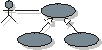

 |
| This artifact is a model of the system's intended functions and its environment, and serves as a contract between the customer and the developers. It is used as an essential input to activities in analysis, design, and test. |
Domains: Requirements
Work Product Kinds: Model |
|
Purpose
|
The following people use the use-case model:
-
The customer approves the use-case model. When you have that approval, you know the system is what the customer
wants. You can also use the model to discuss the system with the customer during development.
-
Potential users use the use-case model to better understand the system.
-
The software architect uses the use-case model to identify architecturally significant functionality.
-
Designers use the use-case model to get a system overview. When you refine the system, for example, you need
documentation on the use-case model to aid that work.
-
The manager uses the use-case model to plan and follow up the use-case modeling and also the subsequent design.
-
People outside the project but within the organization, executives, and steering committees, use the use-case model
to get an insight into what has been done.
-
People review the use-case model to give appropriate feedback to developers on a regular basis.
-
Designers use the use-case model as a basis for their work.
-
Testers use the use-case model to plan testing activities (use-case and integration testing) as early as possible.
-
Those who will develop the next version of the system use the use-case model to understand how the existing version
works.
-
Documentation writers use the use cases as a basis for writing the system's user guides.
|
Relationships
| Contained Artifacts |
|
| Roles | Responsible:
| Modified By:
|
| Tasks | Input To:
| Output From:
|
| Process Usage |
|
Description
| Main Description |
The Use-Case Model should serve as a communication medium and can serve
as a contract between the customer, the users, and the system developers on the functionality of the system, which
allows:
-
Customers and users to validate that the system will become what they expected.
-
System developers to build what is expected.
The use-case model consists of use cases
and actors. Each use case in the model is described in detail, showing
step-by-step how the system interacts with the actors, and what the system does in the use case. Use cases function as
a unifying thread throughout the software lifecycle; the same use-case model is used in system analysis, design, Implementation, and testing.
|
Illustrations
Tailoring
| Representation Options |
UML Representation: Model, stereotyped as <<use-case model>>
A use case model may have the following properties:
-
Introduction: A textual description that serves as a brief introduction to the model.
-
Survey Description: A textual description that contains information not reflected by the rest of
the use-case model, including typical sequences in which the use cases are employed by users and functionality not
handled by the use-case model.
-
Use-Case Packages: The packages in the model, representing a hierarchy.
-
Use Cases: The use cases in the model, owned by the packages.
-
Actors: The actors in the model, owned by the packages.
-
Relationships: The relationships in the model, owned by the packages.
-
Diagrams: The diagrams in the model, owned by the packages.
-
Use-Case View: The use-case view of the model, which is an architectural view showing the
significant use-cases and/or scenarios.
Tailor the use case model to support project needs. This may include including only a subset of the sub-work
products (properties), tailoring the level of formality in which the sub-work products are created and managed, and
tailoring of the individual sub-work products.
|
More Information
© Copyright IBM Corp. 1987, 2006. All Rights Reserved.
|
|